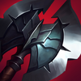
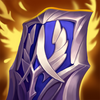
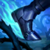
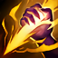

Tanque
/
Peleador
Dificultad Baja
HABILIDADES


PASIVA • CADENCIA MARCIAL
El primer ataque básico de Jarvan a un enemigo inflige daño físico adicional según su vida actual. Este efecto no puede aplicarse de nuevo al mismo objetivo durante unos segundos.
1 • GOLPE DRAGÓN
Jarvan IV proyecta su lanza, lo que inflige daño físico y reduce la armadura de los enemigos en su camino. Además, esto arrastrará a Jarvan a su Estandarte Demaciano, lo que lanzará a los enemigos en su camino por el aire.
2 • ÉGIDA DORADA
Jarvan IV invoca a los reyes antiguos de Demacia para que lo protejan del daño y ralenticen a los enemigos circundantes.
3 • ESTANDARTE DEMACIANO
Jarvan IV porta el orgullo de Demacia, lo que le otorga de forma pasiva velocidad de ataque adicional. Al activar Estandarte Demaciano, Jarvan IV podrá colocar una bandera demaciana para infligir daño mágico al impacto y otorgar velocidad de ataque a campeones aliados cercanos. Vuelve a lanzarlo para lanzar automáticamente Golpe Dragón a la bandera.
DEFINITIVA • CATACLISMO
Jarvan IV salta heroicamente a la batalla sobre un objetivo con tal fuerza que transforma el área circundante para crear una arena alrededor de ellos. Los enemigos cercanos reciben daño en el momento del impacto.
CONFIGURACIÓN
OBJETOS
-

La Cuchilla Oscura
3000+350 Vida Máxima
+35 Daño de Ataque
+25 Aceleración de Habilidad
DESGARRAR: Infligir daño físico a un campeón reduce su Armadura un 5% durante 6 seg y se acumula hasta 5 veces para llegar a una reducción del 25%.
RABIA: Infligir daño físico otorga 20 de Velocidad de Movimiento y los asesinatos otorgan 60 de Velocidad de Movimiento durante 2 seg. Los efectos adicionales no se acumulan. Los campeones a distancia obtienen la mitad de las cantidades. -

Guantelete de Sterak
3200+400 Vida Máxima
SEVERO: +50% de Daño de Ataque básico. Solo aplica para campeones cuerpo a cuerpo.
SALVAVIDAS: El daño que te deje con menos del 35% de Vida te otorga un escudo igual al 75% de Vida adicional que dacae a lo largo de 3 seg (90 seg de Enfriamiento).
FURIA DE STERAK: Activar Salvavidas aumenta tu tamaño y te otorga un 30% de Tenacidad durante 8 seg. -

Ángel Guardián
3100+40 Daño de Ataque
+40 Armadura
RESUCITAR: Tras recibir daño letal, te restaura un 50% de la Vida básica y un 30% de Maná tras 4 seg de estasis. (210 seg de enfriamiento).
-

Apariencia Espiritual
2900+350 Vida Máxima
+100% Regeneración de Vida
+45 Resistencia Mágica
+10 Aceleración de Habilidad
BENDITO: Aumenta todos los efectos de curación, regeneración y de drenar sobre ti mismo en un 30%.
-

Presagio de Randuin
2800+400 Vida Máxima
+55 Armadura
BLINDADO: Reduce el daño recibido de golpes críticos un 15%.
ACERO FRÍO: Reduce la velocidad de ataque de los enemigos en un 15% durante 1.5 seg al recibir un ataque. -

Botas de Mercurio
1000CALZADO: +40 de Velocidad de Movimiento.
MEJORADO: +10 de Resistencia Mágica.
TENACIDAD: Reduce la duración de aturdimientos, ralentizaciones, provocaciones, miedo, silencio, ceguera e inmovilizaciones un 35%.
CARRERA (ACTIVA): Aumenta la Velocidad de Movimiento un 15% durante 3 seg. Infligir o recibir daño de campeones desactiva los efectos de Carrera. (60 seg de enfriamiento). -

Encantamiento de Gárgola
500ARMADURA PÉTREA (ACTIVA): Aumenta tu Vida un 65% y reduce el daño que infliges un 60% durante 4 seg. Si hay 3 o más héroes enemigos cerca, aumenta tu Vida en un 130%. (45 seg de enfriamiento).
RUNAS Y HECHIZOS
-

Conquistador
Obtienes acumulaciones de fuerza adaptable al atacar a un campeón con habilidades o ataques separados. Se acumula hasta 5 veces. Al alcanzar el máximo de acumulaciones, inflige daño adaptable adicional a campeones.
POR ACUMULACIÓN: 2 - 6 de Daño de Ataque adicional o 3 - 9 de Poder de Habilidad durante 6 seg.
EFECTO ADICIONAL CON EL MÁXIMO DE ACUMULACIONES: Cuerpo a cuerpo: 10% | A distancia: 7% de daño adaptable adicional a campeones. -

Brutalidad
Obtienes 7 de Daño de Ataque y un 2% de Penetración de Armadura o 14 de Poder de Habilidad y un 2% de Penetración de Magia (adaptable).
-

Cazador: Titán
Obtienes 20 de Vida Máxima. Los derribos de campeones únicos otorgan 20 de Vida Máxima Y 4% de Tenacidad.
-

Pionero
Obtienes un 9% de Velocidad de Movimiento en maleza, jungla y río fuera del combate.
-

Castigo
Enfriamiento: 10 seg
Inflige 440 de daño verdadero (440-1000) a un monstruo épico o grande, o a un súbdito. Usar Castigo sobre monstruos restaurará 70 de Vida (70 + 10%). Matar a 4 monstruos grandes mejora Castigo a Castigo Devastador o Catigo Desafiante, que puede utilizarse sobre campeones enemigos.
Permiso para Cazar: Obtienes un 20% de experiencia adicional de monstruos de la jungla de forma permanente, pero obtienes un 20% menos de oro y experiencia de súbditos de forma temporal.
Diente y Uña: Inflige un 10% más de daño mágico y te restauran 30 de Vida durante 5 seg.
Obtiene un carga cada 45 seg, hasta un máximo de 2. -

Destello
ENFRIAMIENTO: 150 seg.
Te teletransportas una distancia corta hacia delante o hacia la dirección objetivo.
CÓMO JUGAR JARVAN IV
Jarvan es un jungla luchador. Es un campeón muy equilibrado que es bueno en todas las etapas del juego. Tiene un despeje de jungla decente en el juego temprano y puede emboscar temprano con el combo Estandarte Demaciano (3ra habilidad) y Golpe Dragón (1ra habilidad) que le permite a Jarvan viajar a donde está la bandera de Estandarte Demaciano y derribar a todos en el camino. También es genial en el juego tardío con el mismo combo y Cataclismo (Definitiva) para bloquear a todos en su lugar para que tu equipo pueda hacer un seguimiento y dañar al equipo enemigo.